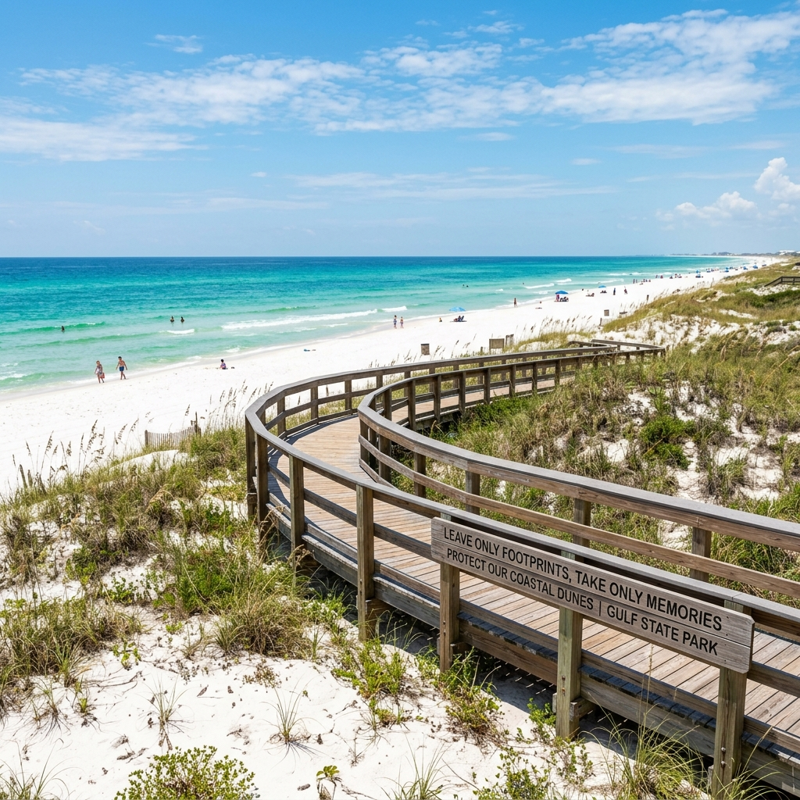
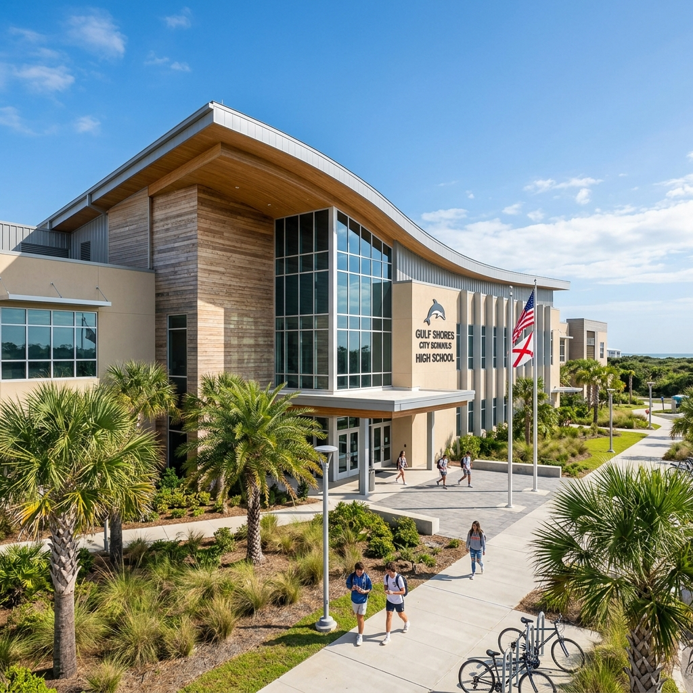
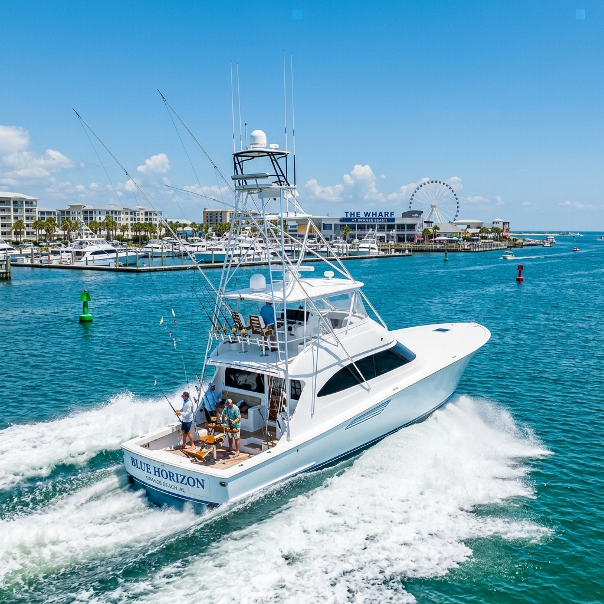
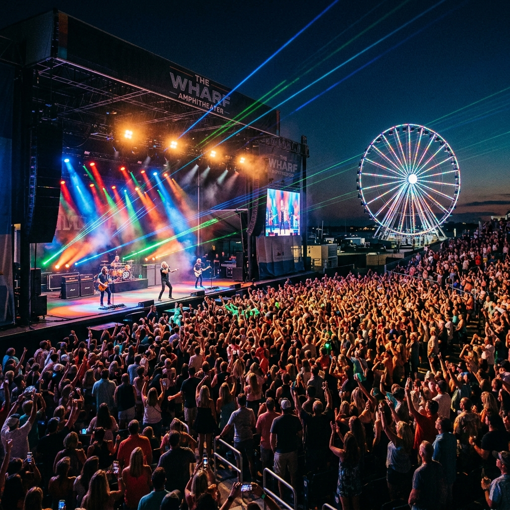
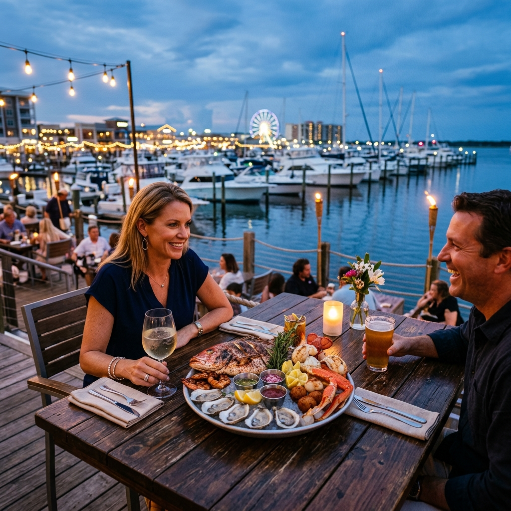
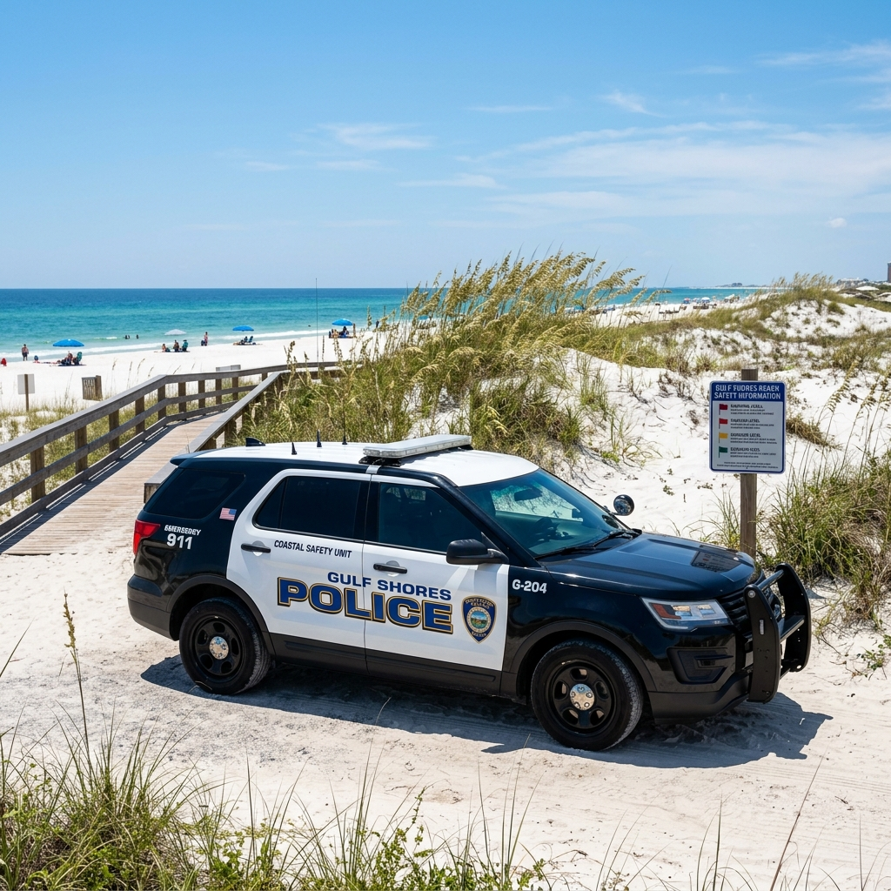
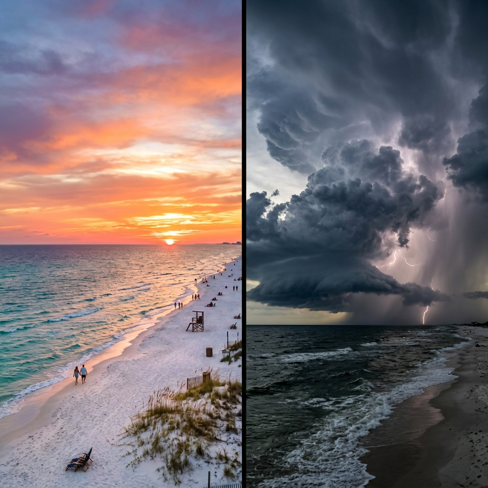

The Ultimate Gulf Coast Relocation Guide.
A comprehensive, hyper-local dive into every aspect of living in Gulf Shores. We've mapped out the schools, the secret marinas, the best grocery stores, and the truth about hurricane season.







